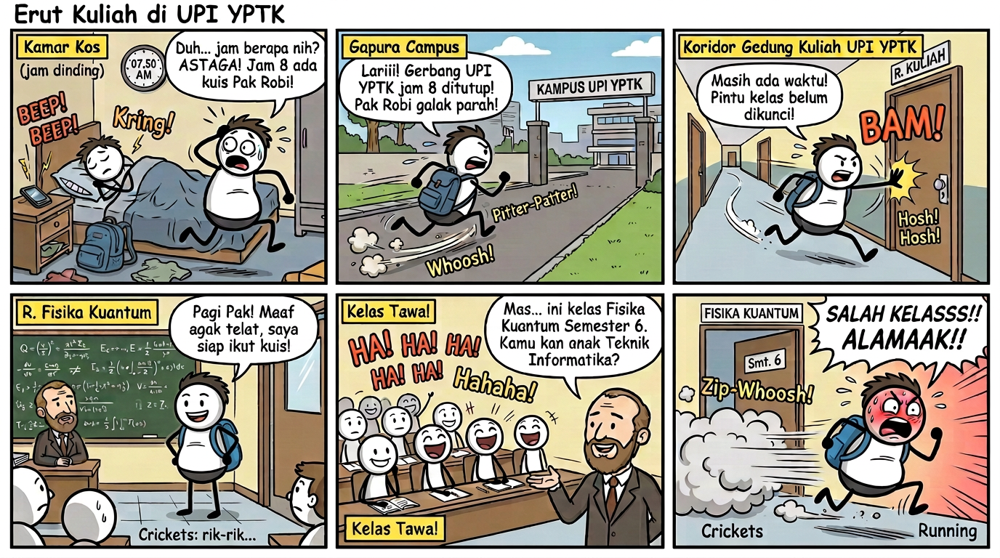
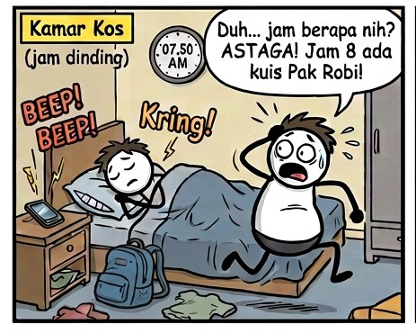
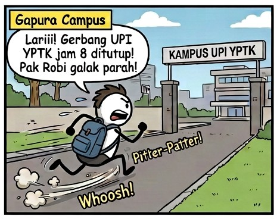
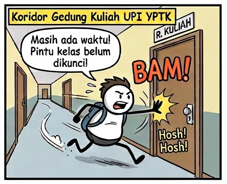
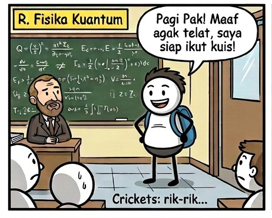
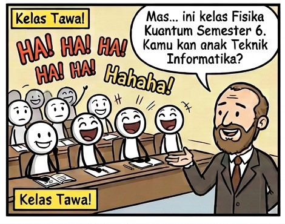
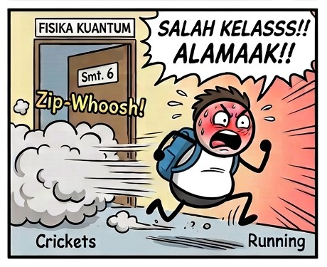
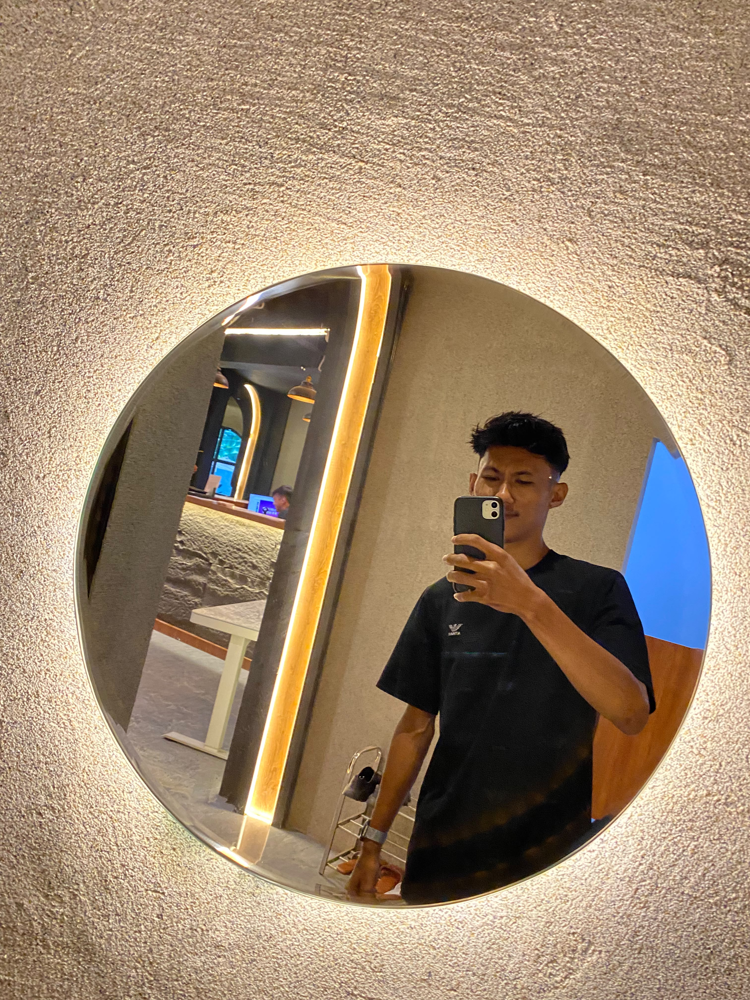

Tugas Animasi Multimedia
Karya Kreatif · Video · Gambar · Prompt AI

Latar Beranda — Klik gambar untuk memperbesar tampilan
Hasil 1 · Video Akhir
Video final hasil produksi animasi multimedia dalam format MP4. Klik ikon ▶ untuk menonton layar penuh.

Klik gambar untuk memutar di tempat, atau klik ikon ▶ untuk menonton layar penuh
Text to Prompt
Kumpulan paragraf penjelasan mengenai proses mengubah teks menjadi prompt untuk AI generatif.
Skenario 1
Di dalam kamar kos yang sempit, jam dinding menunjukkan pukul 07.50. Erut masih tertidur lelap di atas kasur dengan selimut yang berantakan. Tiba-tiba alarm HP berbunyi sangat keras, membuat Sticko melompat kaget dengan mata membelalak dan rambut acak-acakan. Ia melihat jam dan langsung panik karena sadar sebentar lagi ada kuis. VO: "Duh… jam berapa nih? ASTAGA! Jam 8 ada kuis Pak Robi!" Efek suara alarm keras dan "Boing!" mengiringi keterkejutannya.
Skenario 2
Erut segera menyambar tas dan berlari keluar dari kamar kos. Ia melesat di jalanan kota menuju Kampus UPI YPTK dengan kaki yang berputar cepat seperti kartun klasik. Gapura kampus terlihat di kejauhan, sementara Sticko terus berlari sambil membayangkan wajah galak Pak Robi. VO: "Lariii! Gerbang UPI YPTK jam 8 ditutup! Pak Rian galak parah!" Efek suara langkah kaki "pitter-patter" dan angin "whoosh" menemani adegan ini.
Skenario 2
Sampai di koridor Gedung Kuliah UPI YPTK, Erut berlari kencang tanpa memperhatikan sekitar. Ia hampir tergelincir di tikungan, tetapi berhasil menyeimbangkan diri. Tanpa ragu, ia mendorong pintu kelas dengan gaya percaya diri seperti pahlawan yang datang tepat waktu. VO: "Masih ada waktu! Pintu kelas belum dikunci!" Pintu terbanting dengan suara "BAM!" dan napas Sticko terdengar terengah-engah.
skenario 4
Erut berdiri gagah di depan kelas sambil tersenyum lebar, merasa telah berhasil menyelamatkan nilai kuisnya. Namun, kamera perlahan melebar dan memperlihatkan papan tulis yang penuh dengan rumus Fisika Kuantum yang rumit, serta seorang dosen asing berjas yang menatapnya heran. Erut: "Pagi Pak! Maaf agak telat, saya siap ikut kuis!" Suasana langsung hening, hanya terdengar suara jangkrik "rik-rik" yang memperkuat keanehan situasi.
Skenario 5
Seluruh isi kelas, mulai dari dosen hingga belasan mahasiswa , menatap Erut dengan bingung. Beberapa detik kemudian, mereka semua meledak dalam tawa terbahak-bahak. Dosen menggeleng-geleng kepala sambil tersenyum geli. Dosen: "Mas… ini kelas Fisika Kuantum Semester 6. Kamu kan anak Teknik Informatika?" Tawa riuh memenuhi ruangan dengan efek crowd laughter yang kencang.
Skenario 6
Wajah Erut langsung memerah karena malu. Ia berbalik perlahan, lalu kabur melesat keluar kelas meninggalkan jejak asap kartun di belakangnya. Ia berlari sekuat tenaga menjauh dari kelas yang salah, sambil menutupi wajahnya dengan kedua tangan. VO: "SALAH KELASSS!! ALAMAAK!!" Efek suara komedi "Crickets" dan "Zip-Whoosh!" menutup adegan ini dengan kesan lucu dan absurd.
Prompt to Image
Skenario Erut UPI YPTK Menyusun skenario, breakdown scene, dan prompt visual yang konsisten. Terdapat 6 scene dengan karakter sticman 2 dimensi Scene 1. Kamar tidur. Jam beker di meja menunjukkan pukul 07.50. Erut tertidur lelap, tiba-tiba jam berdering kencang. Sticko melompat kaget dengan mata membelalak. VO: "Duh... jam berapa nih? SHIT! Jam 8 ada kuis!" Alarm keras kencang, efek kaget 'Boing!' / 'Swoosh' Scene 2. Erut panik, menyambar ransel, berlari sangat cepat di jalanan kota menuju gerbang kampus, kaki berputar cepat seperti kartun classic. VO: "Lariii! Pak Budi kalau ngunci pintu nggak pakai ampun!" Langkah kaki cepat 'pitterpatter', efek suara angin bertiup kencang Scene 3. Koridor kampus. Erut berlari kencang, hampir tergelincir di tikungan, lalu mendorong pintu kelas dengan gaya pahlawan/percaya diri. VO: "Masih ada waktu! Pintu kelas belum dikunci!" Pintu terbanting 'BAM!', napas terengah-engah Scene 4. Erut berdiri gagah di Sticko: "Pagi Suara hening . depan kelas sambil tersenyum lebar. Namun, pandangan kamera meluas: papan tulis berisi rumus Kalkulus rumit & dosen asing. Pak! Maaf agak telat, saya siap ngikutin kuis!" tiba-tiba (record scratch), jangkrik 'rik-rik' Scene 5. Seluruh isi kelas (dosen & belasan mahasiswa ) menatap bingung, lalu meledak dalam tawa terbahak-bahak. Dosen: "Mas... ini Kelas Kalkulus Lanjut Semester 6. Kamu kan anak Teknik Informatika!" Tawa riuh penonton/kelas (crowd laughter effect) Scene 6. Wajah terstruktur memerah/malu. Ia berbalik perlahan, lalu kabur melesat keluar kelas meninggalkan jejak asap kartun. VO: "SALAH KELASSS!! ALAMAAK!!" Suara komedi 'Crickets', efek melesat cepat 'Zip-Whoosh!' Cerita diatas buat alur cerita yg lain yg baru stickman pergi kuliah di kampus upi yptk dan terdapat 6 scane juga ceritanya sama telat bangun, terlambat masuk kelas, salah masuk kelas . telat bangun → lari ke kampus → salah masuk kelas → malu → kabur. Disusun dalam bentuk tabel rapi seperti contoh.
Gambar Landscape Utama — Hasil prompt: "pemandangan sinematik, cahaya golden hour, resolusi tinggi, detail tajam"
Galeri
Scene 1

Scene 2

Scene 3

Scene 4

Scene 5

Scene 6
Klik setiap gambar untuk melihat versi zoom layar penuh
Image to Video
Enam video hasil konversi dari gambar. Klik gambar untuk memutar di tempat, atau klik ikon ▶ untuk menonton layar penuh.
Video 1
Erut tidur lelap sampai lupa ada kuis Pak Robi .
Video 2
Erut berlari kekampus sambil membawa ransel terburu buru masuk kelas.
Video 3
Erut berlari hampir tergelincir sampai didepan pintu langsung masuk tanpa izin.
Video 4
Pandangan seluruh didalam kelas ke erut ,Erut berdiri berkata "Maaf pak agak telat saya siap megikuti kuis".
Video 5
mahasiswa dikelas itu binggung dan dosen berkata Erut ini bukan kelas kamu, seketika mahasiswa tertawa menertawakin Erut.
Video 6
Lalu erut berbalik pelan dengan rasa malu dan amarah salah masuk kelas .
Klik gambar untuk memutar di tempat, atau klik ikon ▶ untuk menonton layar penuh
Pembuatan Tugas
Identitas pembuat dan penanggung jawab tugas animasi multimedia.

ERUTD M THALIF
Tugas animasi multimedia ini dibuat dan dikerjakan secara mandiri oleh satu orang, mulai dari tahap konsep, perancangan storyboard, produksi animasi, hingga penyusunan dokumentasi prompt AI untuk menghasilkan karya visual yang utuh.
Hasil 1 · Video Akhir
Video final hasil produksi animasi multimedia dalam format MP4. Klik ikon ▶ untuk menonton layar penuh.
Klik gambar untuk memutar di tempat, atau klik ikon ▶ untuk menonton layar penuh
Text to Prompt
Kumpulan paragraf penjelasan mengenai proses mengubah teks menjadi prompt untuk AI generatif.
Scene 1 — Pengantar
Text to prompt adalah proses mengubah ide atau deskripsi teks menjadi perintah terstruktur yang dapat dipahami oleh AI generatif. Dalam animasi multimedia, teknik ini menjadi jembatan antara imajinasi kreator dan hasil visual yang diinginkan.
Scene 2 — Struktur Prompt
Prompt yang baik terdiri dari subjek, gaya visual, pencahayaan, komposisi, dan detail teknis. Semakin spesifik prompt yang ditulis, semakin akurat pula hasil yang dihasilkan oleh model AI seperti Stable Diffusion atau Midjourney.
Scene 3 — Gaya Visual
Gaya visual dalam prompt dapat mencakup realistik, kartun, anime, sinematik, cyberpunk, hingga watercolor. Menentukan gaya di awal membantu AI memahami arah estetika yang diinginkan secara konsisten.
Scene 4 — Pencahayaan & Mood
Elemen pencahayaan seperti golden hour, neon light, soft shadow, atau dramatic lighting mampu membangun mood tertentu. Mood yang kuat akan membuat karya animasi terasa lebih hidup dan emosional.
Scene 5 — Komposisi & Kamera
Sudut kamera seperti close-up, wide shot, bird eye view, atau low angle memberi pengaruh besar pada cerita visual. Komposisi rule of thirds dan depth of field juga sering dipakai untuk memperkuat fokus.
Scene 6 — Kesimpulan
Dengan menguasai text to prompt, seorang animator dapat mempercepat proses produksi, mengeksplorasi banyak variasi ide, dan menghasilkan karya multimedia yang lebih kreatif serta efisien.
Prompt to Image
Hasil konversi prompt teks menjadi gambar. Menampilkan satu gambar landscape dan enam gambar thumbnail dalam grid.
Gambar Landscape Utama — Hasil prompt: "pemandangan sinematik, cahaya golden hour, resolusi tinggi, detail tajam"
Galeri Thumbnail
Scene 1
Scene 2
Scene 3
Scene 4
Scene 5
Scene 6
Klik setiap gambar untuk melihat versi zoom layar penuh
Image to Video
Enam video hasil konversi dari gambar. Klik gambar untuk memutar di tempat, atau klik ikon ▶ untuk menonton layar penuh.
Video 1
Video 2
Video 3
Video 4
Video 5
Video 6
Klik gambar untuk memutar di tempat, atau klik ikon ▶ untuk menonton layar penuh
Pembuatan Tugas
Identitas pembuat dan penanggung jawab tugas animasi multimedia.
ERUTD M THALIF
Tugas animasi multimedia ini dibuat dan dikerjakan secara mandiri oleh satu orang, mulai dari tahap konsep, perancangan storyboard, produksi animasi, hingga penyusunan dokumentasi prompt AI untuk menghasilkan karya visual yang utuh.